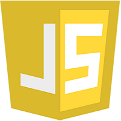

Mes compétences
HTML
CSS

JavaScript

MySQL
PHP

Je suis actuellement étudiant en BTS SIO (Brevet de Technicien Supérieur en Services Informatiques aux Organisations) au sein du lycée Parc des Loges à Evry. Il s'agit d'une formation de 2 ans après le baccalauréat qui forme des technicien spécialisé en informatique. Ce diplôme propose 2 spécialités : SISR (Solutions d'Infrastructure, Systèmes et Réseaux) et SLAM (Solutions Logicielles et Applications Métiers). J'ai pour ma part choisi l'option SLAM car je souhaite me spécialiser dans le développement mais surtout dans la gestion de base de donnée.
Dans le cadre d'un stage d'observation de 3ème, je devais faire l'expérience en entreprise afin d'en apprendre plus dans l'environnement du travail et cotoyer des professionnelles. Ce stage a été une belle expérience qui a pu déterminer mon choix d'orientation.
Dans le cadre d'un stage de fin d'année, je devais mettre en application tout ce que j'ai appris surant l'année en développement web pour la réalisation d'un site marchand pour une boutique de pièces automobiles.